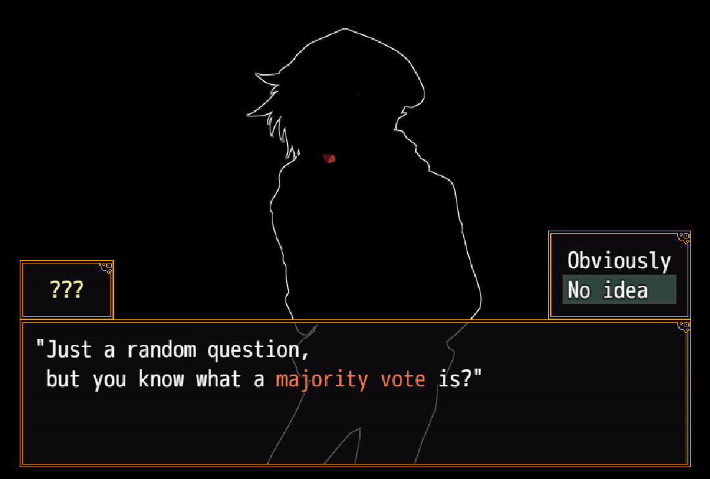

The following games are some of my personal favourites for various reasons that are explained along with the genre that the games belong to. From containing one of the most intriguing stories, to my favourite characters and extremely fun mysteries to solve or being a masterpiece of game design, these games are varying in what they are best at but there is something that I can guarantee about all of them: you will not regret playing them.
Your Turn to Die

- Being a game designed in a retro art style with click to interact gameplay, any casual gamer would not expect much from Your Turn to Die. Also known as "Kimi ga Shine", this mystery thriller death game based on a majority vote was first released by Nankidai on August 28, 2017. Currently unfinished, this game has released a total of 6 parts with only two more to go. Your Turn to Die follows Sara Chidouin, a high school girl who gets abducted and forced to be a part of a Death Game along with 10 other players. It is a story of cooperation, trust and betrayal. Not everyone is destined to survive the game, and unlike the other death games I have played, this one specifically gives the characters time to grief their dead allies.
- Your Turn to Die is being translated to English from Japanese by VgPerson and is available to be played for free online at vgperson.com (Your Turn to Die by VgPerson)

My Friend Pedro
- My Friend Pedro is a 2d side-scrolling arcade shooter which incorporates common gameplay elements such as bullet time, along with an in-game score counter to allow for a truly amazing experience. The game is built around replayability, as the player is encouraged to up their score with subsequent playthroughs and difficulty tweaks. The score is built around a system where the “cooler” your kills and combos are, the more your score increases. There are a variety of weapons to choose from, some of which can even be dual-wielded to allow for more interesting combat scenarios. Although the story is quite plain and uninteresting, the art style of the levels, and the talking banana, Pedro, which acts as your guide, is a humorous and witty character.